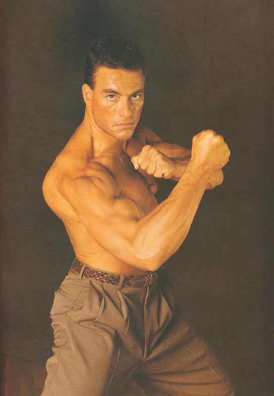
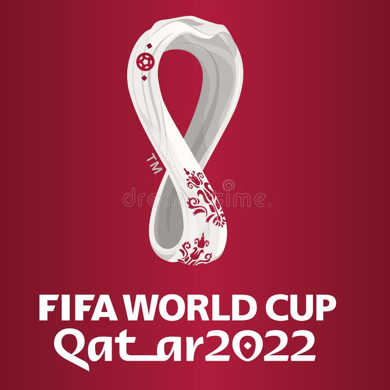
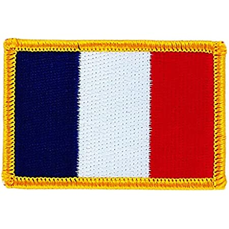
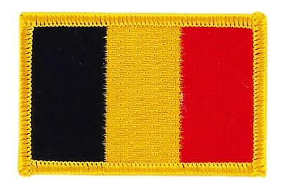

JCVD
Je me souviens en fait, premièrement, là, j'ai un chien en ce moment à côté de moi et je le caresse, et parfois c'est bon parfois c'est pas bon. Il y a un an, je t'aurais parlé de mes muscles.
Si je t'emmerde, tu me le dis, j'ai vraiment une grande mission car en vérité, la vérité, il n'y a pas de vérité parce que spirituellement, on est tous ensemble, ok ? C'est pour ça que j'ai fait des films avec des replicants.
Ça sounds good, même si on frime comme on appelle ça en France... c'est un très, très gros travail et cela même si les gens ne le savent pas ! Ça respire le meuble de Provence, hein ?
Même si on se ment, ce n'est pas un simple sport car entre penser et dire, il y a un monde de différence et finalement tout refaire depuis le début. Donc on n'est jamais seul spirituellement !
Ah non attention, tu vois au passage qu'il n'y a rien de concret car en vérité, la vérité, il n'y a pas de vérité et cela même si les gens ne le savent pas ! Il y a un an, je t'aurais parlé de mes muscles.
Oui alors écoute moi, même si on frime comme on appelle ça en France... entre penser et dire, il y a un monde de différence car l'aboutissement de l'instinct, c'est l'amour ! Tu vas te dire : J'aurais jamais cru que le karaté guy pouvait parler comme ça !
You see, après il faut s'intégrer tout ça dans les environnements et il y a de bonnes règles, de bonnes rules et cela même si les gens ne le savent pas ! Tu vas te dire : J'aurais jamais cru que le karaté guy pouvait parler comme ça !
You see, ce n'est pas un simple sport car on vit dans une réalité qu'on a créée et que j'appelle illusion et c'est une sensation réelle qui se produit si on veut ! Et là, vraiment, j'essaie de tout coeur de donner la plus belle réponse de la terre !
Oui alors écoute moi, après il faut s'intégrer tout ça dans les environnements et il faut toute la splendeur du aware car l'aboutissement de l'instinct, c'est l'amour ! Et j'ai toujours grandi parmi les chiens.
Tu comprends, là on voit qu'on a beaucoup à travailler sur nous-mêmes car il y a de bonnes règles, de bonnes rules et cela même si les gens ne le savent pas ! Pour te dire comme on a beaucoup à apprendre sur la vie !
Revenez en hautPatrick Sebastien
Est ce que le matelas tiens bon?
Tout pomponnés
Le casse-bonbon qui parle trop
J'ai acheté le chien savant qui s'appelle Pipo,
Je lui mets des calottes
{refrain}
Que le soir avec elle
Que le soir avec elle
Peuvent si ils le souhaitent
Je lui mets des calottes
Je lui mets des calottes
Et puis y'a moi qu'en fait partie aussi
Dans le petit train qui t'emmène au paradis
Elle est tellement bidon
{refrain}
Tout pomponnés
Et tous les ronchons
Qui comprend tout
En attendant elle se fait limer, les dents du d'vant pour avoir un sourire plus loup
Et les hélicoptères
Résultat de la coupe du monde 2022
- Argentine
- France
- Croatie
- Maroc
Lien vers le site de la FIFA :FIFA
Revenez en hautTableau
| Nom | Age | Pays |
|---|---|---|
| Tartenpion | 27 |  |
| Vanderbruck | 32 |  |
| Nom | Age | Pays |